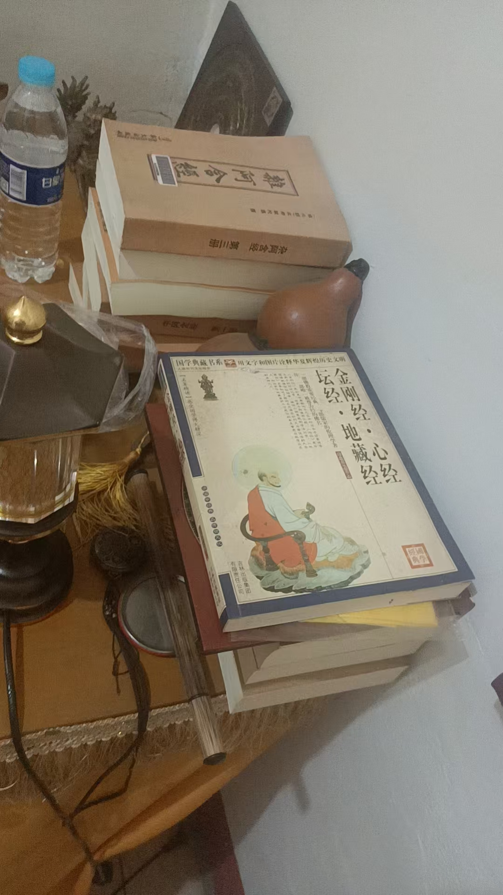
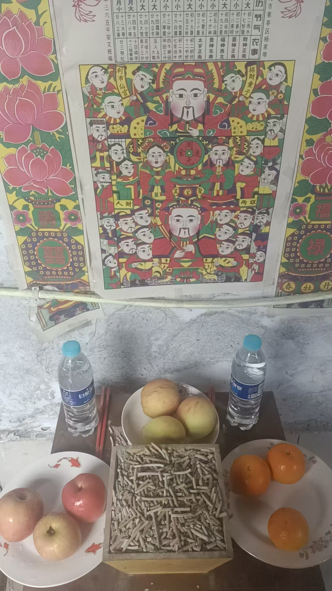

20260715练功的孩子，功能稳定，并且多样化
风水布局民间文化符咒术法 原始对话记录得出一个结论，
练功的孩子，功能稳定，
并且多样化
这样路子就对了
到最后神通具足
长大了功能不会退化吗？
维次马首是瞻
啥意思，我现在56
功能还在夸夸夸的出
@林林 [呲牙][呲牙]
稳定且层出不穷
直到神通具足
爷爷周年
并且有一个大型法事要做
明天还有一个大型法事
[强][强][强]
收费过万的就叫大型法事
福主，一再嘱咐，一定要做好，做大
我说，按理说这类法事得收十几万
不管有钱没钱，我尽量少花，并不是做不好
今明这两家都不差钱
你看这家，小时候，姊妹五个，瘟疫死了两个哥哥一个姐姐，
三家堕胎七个
这就要化解十个阴灵
花钱少了怎么行
不过，除了酒食
所有物品都是纸扎的
花不了多少
出发
一语服人
为什么这么信任
这妇人说梦见爸妈了
我说，公墓，穿着艳丽，唯独嫌阴宅矮小，不如意
这妇人就说，对对，太对了
要知道，六十多岁，父母不一定是公墓
看的一定要清清楚楚
这么多学生里，能解读阴宅的，只有六个
不是看不到，而是看了浑身发凉
时间紧，一个红灯说一句[呲牙][呲牙]

阿含经，共九本

耳边就冒出，器具质而洁，瓦碚盛金玉
祖宗虽远，祭祀不可不诚
朱熹朱夫子治家格言
有天兵天将，你有养
[呲牙][呲牙][呲牙]
化亿咒
供养三千大千世界恒河沙数大千世界所有分身佛，菩萨
这一句是供完佛再供我
五十六岁，功能还在出
得出一条结论。练功的孩子，功能稳定，并且多样化。这样路子就对了。到最后神通具足。
有人在下面问，长大了功能不会退化吗。
答的是维次马首是瞻。啥意思。我现在56，功能还在夸夸夸的出。稳定且层出不穷，直到神通具足。
56这个数字，他在别处也提过。说得也平常。
后半页忽然换场。爷爷周年，并且有一个大型法事要做。明天还有一个大型法事。收费过万的就叫大型法事。
福主一再嘱咐，一定要做好，做大。我说，按理说这类法事得收十几万。不管有钱没钱，我尽量少花，并不是做不好。
你看这家，小时候，姊妹五个，瘟疫死了两个哥哥一个姐姐，三家堕胎七个。这就要化解十个阴灵。花钱少了怎么行。不过，除了酒食，所有物品都是纸扎的，花不了多少。
出发。
车上还有一段。一语服人，为什么这么信任。这妇人说梦见爸妈了。我说，公墓，穿着艳丽，唯独嫌阴宅矮小，不如意。这妇人就说，对对，太对了。要知道，六十多岁，父母不一定是公墓。看的一定要清清楚楚。
这么多学生里，能解读阴宅的，只有六个。不是看不到，而是看了浑身发凉。
时间紧，一个红灯说一句。
页末冒出那句耳边的话：祖宗虽远，祭祀不可不诚。紧接着是化亿咒——供养三千大千世界恒河沙数大千世界所有分身佛，菩萨，这一句是供完佛再供我。
前一半讲的是功能，后一半讲的是纸扎和阴灵。功能这一头是往上的，纸扎那一头是往下的。